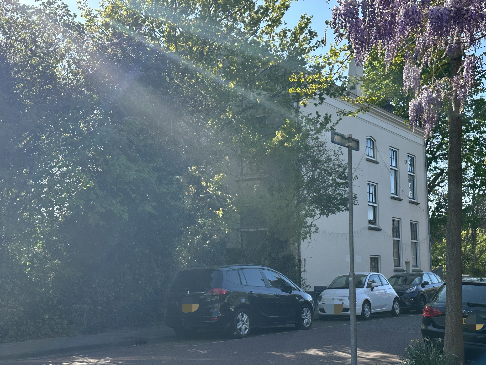
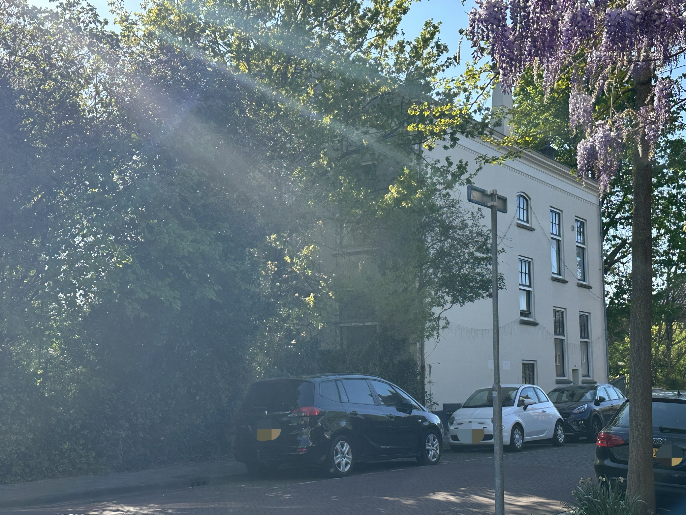

Paul Dirac has influenced me more than anyone else. He influenced me in two ways: his pursuit of pure logic made me reflect on the essence of beauty, and his tranquility after tragedy made me think deeply about the balance of logic and impulsion in understanding and relationships. Dirac's experience inspired me to write short fiction and analytical articles that display the relationships of the figures in early quantum theory. In researching the historical sources for composing those articles, I feel the realistic fullness of those historical figures rather than a shallow conclusion of their characteristics, such as "an indifferent genius". This made me rethink their logical and illogical behaviours that hide behind those stories, their incompleteness as perfection, in other words, completeness as a human.
Click here for the pics of him I collected →
A man not larger than life, but exactly life-sized. In it, he awkwardly coexisted with emotions that he called "insignificant", as if even sadness is a sacred thing that is not allowed.
He sat almost in the middle of a quiet wheat field, minimizing disturbances as much as possible, but the golden color seemed to be suppressed painfully, and no one knew whether it was because the deep blue sky was getting lower or because the crows stopped coming.